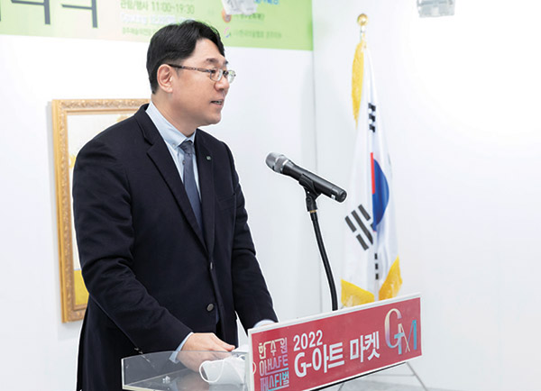
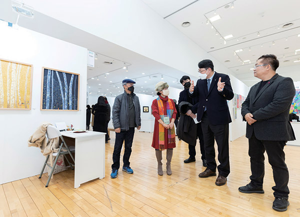
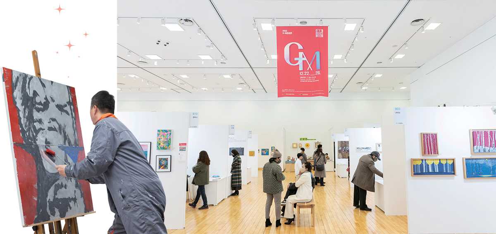

지난 12월 22일, 한수원이 주최하고 경주문화재단이 주관하며 사단법인 한국미술협회 경주지부가 운영을 맡은 ‘한수원아트페스티벌2022 G-아트마켓’ 개막식이 열렸다. 한수원아트페스티벌이 시도하는 첫 아트마켓 프로그램으로 지역예술가들의 작품을 소개하고 판매활동을 돕는 G-아트마켓의 시작을 알리는 개막식 현장을 소개한다.
글. 양지예 사진. 이승헌
지난 12월 22일, 경주 예술의전당에서 ‘한수원아트페스티벌2022 G-아트마켓’ 개막식이 열렸다. 2018년 시작된 한수원아트페스티벌은 경주의 역사·문화적 역량과 글로벌 에너지 기업 한수원의 문화경영이 결합한 경주지역의 대표 문화 브랜드다.
한수원아트페스티벌2022는 야수파의 창시자인 ‘앙리 마티스’의 재즈 시리즈 등 원작 200여 점을 선보이는 대형 특별전시 <앙리 마티스:라이프 앤 조이>와 경주지역의 기성 및 신진작가들이 참여하는 축제형 프로그램
G-아트마켓이 열리는 전시장에는 개막 첫날부터 작품을 보려는 시민들의 발길이 끊이지 않았다. 회화, 조각, 서예뿐만 아니라 작가들이 직접 제작한 예술상품 및 공예품 등 다양한 작품들이 전시를 통해 시민들을 만났다. 붓 그림으로 유명한 이정웅 작가의 특별전과 환경을 주제로 활동하는 한원석 작가의 시민참여형 설치 작품은 많은 관람객들의 눈길을 사로잡았다. 특히 아동 대상의 체험행사인 그림동화 특별전 부스에는 일러스트 속 주인공들에게 색을 입히는 체험을 하기 위한 아이들로 북적거려 축제 분위기를 더했다.


오후 5시, 전시가 한창인 가운데 ‘한수원아트페스티벌2022 G-아트마켓’ 개막식의 화려한 막이 올랐다. 작품을 관람하던 시민들도 개막식에 참여해 경주 지역 작가들과 미술애호가들이 만나는 소중한 기회가 될 G-아트마켓의 개막을 축하했다. 가장 처음, 오은영 마술사가 마술과 그림을 결합한 개막 축하공연으로 관객들의 시선을 집중시켰다. 오은영 마술사는 이번 G-아트마켓에서 미술교육 프로그램의 일환으로 ‘마술과 함께하는 명화산책’을 진행하며 행사 기간 내내 관람객들과 만난다.
이어 개막식을 축하해 주기 위하여 참석한 내외빈 소개가 이어졌다. 이번 한수원아트페스티벌2022 G-아트마켓의 운영을 맡은 경주미술협회 최영조 회장의 소개로 한수원 이상욱 홍보실장을 비롯해 이철우 경주시의회 의장, 김상용 경주 예총회장 등의 이름이 거론되자 환영의 박수가 터져 나왔다.
한수원을 대표해 이상욱 홍보실장이 연단에 섰다. 이상욱 홍보실장은 축사를 통해 “한수원아트페스티벌2022 G-아트마켓을 통해 경주미술인들의 창작 의욕을 고취시키고 작품발표를 위한 소개의 장을 마련하여 다양한 창작품 및 미술체험교육을 통해 시민들이 우수한 문화예술을 향유할 수 있기를 바란다”며 “한수원은 앞으로도 경주와 함께 성장하고 주민들과 상생하기 위해 최선을 다하겠다”고 약속했다.
각계각층의 축하인사와 격려사가 이어진 후, 개막 마지막 공연인 최지훈 작가의 페인팅 퍼포먼스가 이어졌다. 최지훈 작가는 신라미술대전 및 각종 대회에서 대상을 수상하며 지금까지 왕성한 작품활동을 펼치고 있는 작가로, 특별히 G-아트마켓의 개막을 축하하기 위해 공연을 준비했다. 쉽게 볼 수 없는 작가의 작업 과정을 숨죽이며 지켜본 관객들은 예술혼을 불태우는 작가를 향해 감탄과 환호를 보냈다.
퍼포먼스가 끝난 후에는 한수원아트페스티벌2022 G-아트마켓의 본격적인 시작을 알리는 테이프 커팅식이 이어졌다. G-아트마켓이 개최될 수 있도록 물심양면 도움을 주신 각계각층의 내빈들이 커팅식을 위해 테이프 앞에 섰다. 셋, 둘, 하나! 관객들이 함께 외치는 카운트다운에 따라 테이프가 커팅 됐다. 커다란 박수와 함성을 끝으로 한수원아트페스티벌2022 G-아트마켓 개막식이 막을 내렸다.
G-아트마켓을 통해 지역미술시장의 작품거래가 활성화되고 경주예술계에 활력과 새로운 바람을 일으키길 기대한다.
